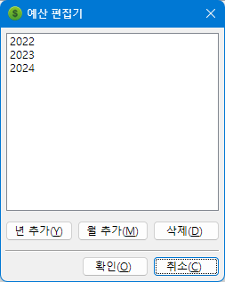
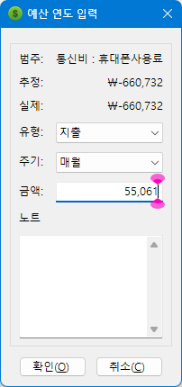
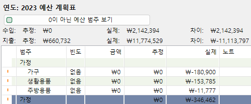

MMEX에서는 연간 또는 월간 예산을 설정할 수 있습니다. 이를 통해 실제 지출이 예산과 어떻게 비교되는지 확인할 수 있습니다.
예산은 달력 기준 연도 또는 회계연도로 표시할 수 있습니다. 옵션 설정 창을 사용하여 회계연도의 시작 시점과 기타 고정 설정을 지정할 수 있습니다.
예산을 설정하려면 '예산' 항목에서 마우스 오른쪽 버튼을 눌러 월간 예산 또는 연간 예산을 추가합니다.
연도를 추가하면 해당 연도를 선택하여 예산 계획 도구를 볼 수 있습니다.
각 항목은 더블 클릭하여 편집할 수 있으며, 다른 항목들도 같은 방식으로 편집할 수 있습니다.
선택한 연도에 대한 예산이 이 창에 표시됩니다. 이후의 월 또는 연도 예산은 이 예산을 바탕으로 생성할 수 있습니다.
각 주요 항목에 대한 총합이 표시됩니다.
예산을 설정할 때 총합 표시를 숨기려면 메뉴에서 보기 → 예산 계획 도구: 총합 숨기기를 선택하면 됩니다.
'예산' 메뉴 아래의 보고서를 사용하여 실제 지출이 설정한 예산과 어떻게 다른지 비교할 수 있습니다.